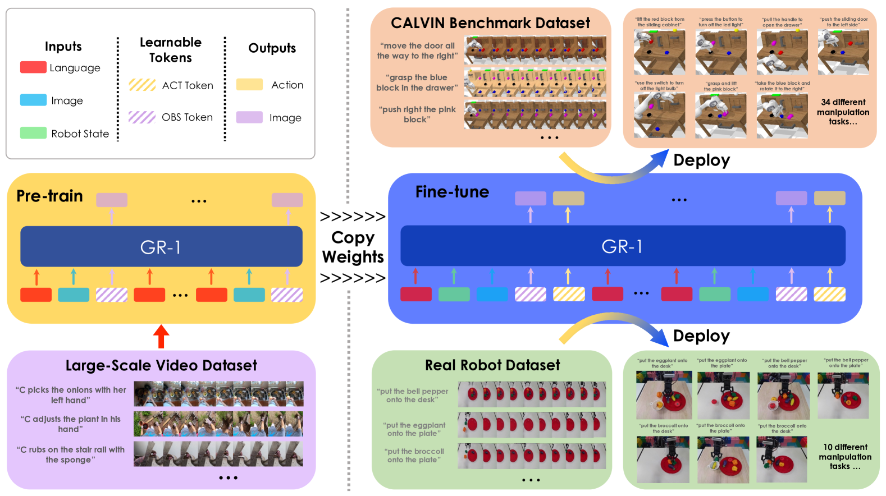
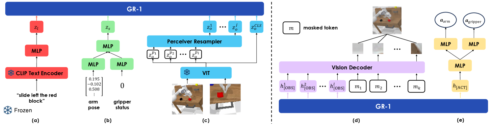
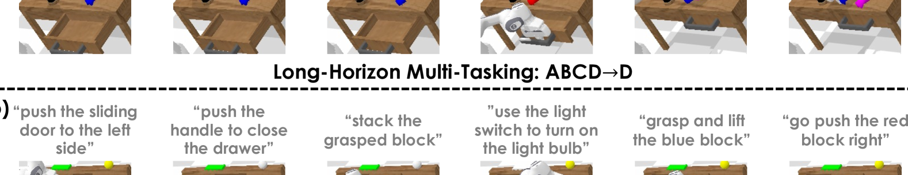
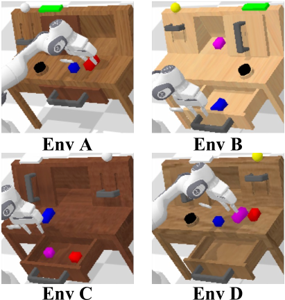
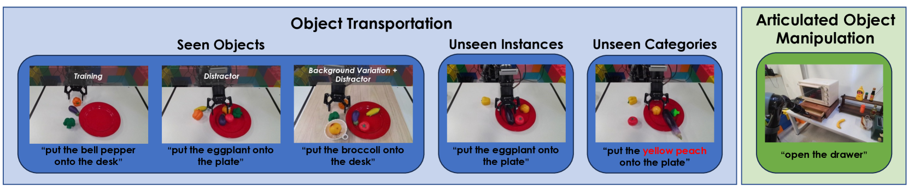
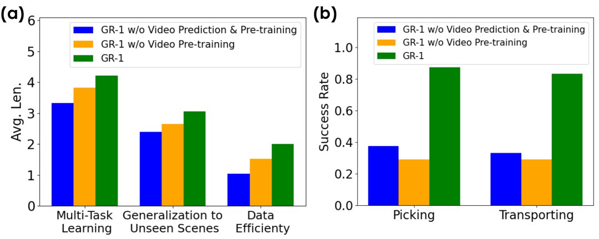

Unleashing Large-Scale Video Generative Pre-training for Visual Robot Manipulation
1. Quick overview of the paper
| What should the paper solve? | Robot demonstration data is scarce, expensive, and contains multi-modal signals such as images, states, actions, and languages; the author hopes to use larger-scale non-robot video data to improve multi-task language-conditioned visual operations. |
|---|---|
| The author's approach | Think of the robot trajectory as a visual sequence with actions: first use the language conditional video prediction on Ego4D to learn "what will happen next", and then transfer this ability to robot strategy learning. |
| most important results | CALVIN ABCD$\rightarrow$D's success rate increased from the best baseline of 88.9% to 94.9%, and the average number of consecutive completed tasks increased from 3.06 to 4.21; ABC$\rightarrow$D's unseen scene success rate increased from 53.3% to 85.4%. |
| Things to note when reading | The core is not simply replaced by Transformer, but a combination of "video prediction token + behavioral cloning token + large-scale video pre-training"; the appendix ablation shows that only video prediction without pre-training is also helpful, but the complete GR-1 is the strongest. |
Difficulty rating: ★★★★☆. Requires familiarity with behavioral cloning, Transformer sequence modeling, visual encoders, long-term robotic evaluation, and CALVIN's continuous task protocol.
Keywords: visual robot manipulation, language-conditioned policy, video generative pre-training, GPT-style transformer, CALVIN, Ego4D.
Core contribution list
- Proof that video generative pre-training helps robots operate: The author uses human interaction videos in Ego4D as a pre-training source and verifies the transfer effect on CALVIN and real robots.
- Proposed unified model GR-1: A GPT-style causal Transformer simultaneously receives language, historical images, and robot state, and outputs actions and future images.
- System evaluation generalization and data efficiency: Including multi-tasking, unseen scenes, 10% data, unseen language, unseen instances and unseen categories of real robots.

2. Motivation
2.1 What problem should be solved?
Generative pretraining in NLP and CV has shown that large-scale sequence data can provide transferable representations. The obstacles in the field of robotics are: high demonstration collection costs and sparse data; at the same time, robotic data is naturally multi-modal, including images, language, status, actions, etc. The key judgment of the paper is that the robot trajectory itself also contains video sequences, so there are structural similarities between "predicting future pictures based on language and past pictures" and "selecting actions based on language and historical observations".
A specific scenario is a long-term CALVIN operation: the robot must not only understand language such as "slide left the red block", but also visually locate objects, predict how the environment will change after the operation, and continuously complete up to 5 tasks. If it only relies on a small amount of robot data with language annotation, it will be difficult for the model to obtain a sufficiently robust visual-language-temporal structure.
2.2 Limitations of existing methods
The paper divides the previous work into several lines: the language conditional operation method can use LLM or CLIP for task understanding, but some methods predict sparse key points and rely on motion planners, which are less flexible than end-to-end continuous actions; the hierarchical method uses the latent plan conditionalization strategy, but it is not a simple and unified GPT-style trajectory modeling. Transformer decision-making models such as Decision Transformer, GATO, and RoboCat indicate that sequence models are suitable for decision-making problems, but RoboCat does not do video pre-training and is goal-image conditioned rather than language-conditioned.
In terms of pre-training, R3M, MVP, etc. focus more on visual representation, while VPT/VIPER uses videos within the task environment; the difference between GR-1 and them is that it uses non-robot, large-scale Ego4D videos outside the domain for language-conditional future frame prediction, and retains two output heads of future image and action prediction in the same model.
2.3 The solution ideas of this article
The high-level idea is to design the pre-training task as a substructure of the robot fine-tuning task: the pre-training phase inputs language and past frames, and outputs future frames; the robot phase additionally adds state input and action output, while continuing to predict future frames. In this way, the visual-language-temporal relationships learned through video pre-training can be directly fed into robot policy learning, rather than just as independent frozen representations.
4. Detailed explanation of method
4.1 Formalization of the problem
Video pre-training task: given language description and historical image sequence, predict future images.
$$\pi(l, \mathbf{o}_{t-h: t}) \rightarrow \mathbf{o}_{t+\Delta t}$$| $l$ | Natural language description of video. |
| $\mathbf{o}_{t-h: t}$ | The video frame sequence from $t-h$ to the current $t$. |
| $\mathbf{o}_{t+\Delta t}$ | Target frame at step $\Delta t$ in the future. |
Robot fine-tuning task: Beyond video prediction, simultaneously predicting current actions.
$$\pi(l, \mathbf{o}_{t-h: t}, \mathbf{s}_{t-h: t}) \rightarrow \mathbf{o}_{t+\Delta t}, \mathbf{a}_{t}$$| $\mathbf{s}_{t-h: t}$ | Robot state sequence, including end effector 6D pose and binary gripper state. |
| $\mathbf{a}_{t}$ | Current action: continuous arm action and gripper binary action. |
| $D=\{\tau_i\}_{i=1}^{N}$ | An expert trajectory data set containing $M$ tasks. Each trajectory contains language, image, status, and action. |
4.2 Model input and token organization
GR-1 uses a multi-modal encoder to map language, images and robot states into the same Transformer dimension. Language is encoded by CLIP text encoder; visual observations are encoded by MAE pre-trained ViT, CLS token is used as a global representation, patch token is compressed by Perceiver resampler; robot state is encoded by linear layer.Appendix Network and Training Details

The model learns two types of special tokens: [OBS] for future image prediction, [ACT] for action prediction. The sequence in the pre-training stage is language, image, [OBS] Appear alternately; the robot fine-tuning phase adds status and [ACT]. The author places repeated linguistic tokens in order to prevent linguistic information from being overwhelmed by denser visual and status tokens. A learned relative time embedding is also added to each time step, and all modalities at the same time step share this time embedding.
4.3 Causal Transformer and mask
GR-1 uses GPT-style causal Transformer, but uses a special mask for the prediction token. During pre-training, the token can see the token at the previous position, but not the previous one. [OBS] Prediction token; when fine-tuning, you cannot see the previous [OBS] and [ACT]. This prevents the model from leaking target information from the prediction token and maintains autoregressive historical condition prediction.
4.4 Output header and loss
The future image is transformed by the transformer decoder from [OBS] Corresponding output and mask token reconstruct patch, the training target is pixel space MSE, and MAE style patch-wise normalization is used. action by [ACT] The output goes through three layers of MLP, and is finally divided into two heads: arm and gripper: arm uses Smooth-L1 loss, and gripper uses BCE loss. The total loss in the fine-tuning phase is:
This shows that video prediction is not an auxiliary task that is discarded after pre-training, but still exists as a training signal when the robot is fine-tuned.
4.5 Training details
The pre-training data comes from Ego4D and contains more than 3500 hours of human-object interaction videos. The author trimmed 3-second short clips from the video, resulting in a total of 800, 000 clips and 8M frames. Pretrain randomly sampled sequences and predict future frames. Randomly sample robot trajectory segments during fine-tuning while optimizing behavioral cloning and video prediction losses.
| Project | pre-training | Robot fine-tuning |
|---|---|---|
| data | Ego4D; 800k clips; 8M frames | CALVIN or real robot data |
| prediction step size | $\Delta t=1$, equally spaced frames 1/3 second apart | $\Delta t=3$, predict static camera and gripper camera images |
| sequence length | 10 | |
| freeze module | CLIP text encoder and MAE image encoder | |
| Transformer | 12 layers, 12 heads, hidden size 384; total parameters 195M, of which 46M are trainable Appendix Network and Training Details | |
| hyperparameters | pre-training | fine-tuning |
|---|---|---|
| batch size | 1024 | 512 |
| learning rate | 3.6e-4 | 1e-3 |
| dropout | 0.1 | 0.1 |
| optimizer | AdamW | AdamW |
| schedule | cosine decay | cosine decay |
| warmup epochs | 5 | 1 |
| training epochs | 50 | 20 |
5. Experiment
5.1 Experimental questions and settings
The author designed experiments around three questions: whether GR-1 can improve visual robot operation; whether it can work on real robots; whether it can handle challenges such as small data, unseen scenes, unseen objects, and unseen languages. The main benchmarks include the CALVIN benchmark and real robot object transportation / articulated object manipulation.


CALVIN contains 34 tasks and open language instructions. The training data has more than 20k expert trajectories, but the author simulates real scenarios and only uses 1% of the data with crowdsourced language instruction labels to train GR-1, RT-1 and MT-R3M; MCIL and HULC use the complete CALVIN data. The evaluation uses 1000 unique sequence instruction chains, and each chain can complete up to 5 tasks continuously; a single task that is not completed within 360 timesteps is considered a failure.Appendix CALVIN Benchmark Experiments
5.2 CALVIN main result
| settings | method | 1 task | 2 tasks | 3 tasks | 4 tasks | 5 tasks | Avg. Len. |
|---|---|---|---|---|---|---|---|
| ABCD$\rightarrow$D | HULC best baseline | 0.889 | 0.733 | 0.587 | 0.475 | 0.383 | 3.06 |
| ABCD$\rightarrow$D | GR-1 | 0.949 | 0.896 | 0.844 | 0.789 | 0.731 | 4.21 |
| ABC$\rightarrow$D | RT-1/MT-R3M Best Baseline | 0.533 | 0.234 | 0.105 | 0.043 | 0.018 | 0.93 |
| ABC$\rightarrow$D | GR-1 | 0.854 | 0.712 | 0.596 | 0.497 | 0.401 | 3.06 |
| 10% data | HULC best baseline | 0.668 | 0.295 | 0.103 | 0.032 | 0.013 | 1.11 |
| 10% data | GR-1 | 0.778 | 0.533 | 0.332 | 0.218 | 0.139 | 2.00 |
| unseen language | HULC best baseline | 0.715 | 0.470 | 0.308 | 0.199 | 0.130 | 1.82 |
| unseen language | GR-1 | 0.764 | 0.555 | 0.381 | 0.270 | 0.196 | 2.17 |
ABCD$\rightarrow$D measures the multi-task ability trained in all environments and evaluated in D environment; GR-1 is higher than the baseline from the 1st to the 5th consecutive task, especially the 5-task success from 0.383 to 0.731 of HULC. ABC$\rightarrow$D is a zero-shot unseen scene generalization. The 1-task success of GR-1 is 0.854, which is significantly higher than the best baseline of 0.533. 10% data uses 10% of the total training set of ABCD$\rightarrow$D, that is, 66 per task and a total of 2244 trajectories; GR-1 still reaches a 1-task success of 0.778. success.
In the unseen language experiment, the author used GPT-4 to generate 50 synonymous instructions for each of 34 tasks, and randomly sampled them during evaluation. Appendix examples include "use the switch to turn off the light bulb" to "use the switch to stop the light source."Appendix More Results
5.3 Real robot experiment

The real robot uses a 7-DoF Kinova Gen2 with RealSense installed on the end, and the camera static view is from Kinect Azure. The object handling training scene includes plate, eggplant, broccoli, and bell pepper, with a total of 1775 VR collection demonstrations; the drawer opening and closing training has 2856 trajectories. Real robot fine-tuning basically follows the CALVIN settings, but the batch size is changed to 64 and the training epochs are changed to 30.Appendix Real Robot Experiments
| method | Seen Objects | Unseen Instances | Unseen Categories | Articulated Object Manipulation |
|---|---|---|---|---|
| RT-1 | 0.27 | 0.13 | 0.00 | 0.35 |
| MT-R3M | 0.15 | 0.13 | 0.10 | 0.30 |
| GR-1 | 0.79 | 0.73 | 0.30 | 0.75 |
The main failure modes reported by the author are also very specific: RT-1 and MT-R3M often pick up the wrong objects and place them incorrectly, and RT-1 may also hit the plate or desk; GR-1 will confuse bell pepper with similar colors in unseen categories with peach; in the drawer task, it will appear that the handle is not fully closed or the handle is not grasped. See Figure 9 for the real robot rollout.
5.4 Qualitative results of video prediction

This part supports the core mechanism explanation of the paper: future frame prediction signals can provide future state constraints for action prediction. The authors do not convert the prediction quality into an independent quantitative metric, but use qualitative figures to illustrate that future frame structure can be recovered on CALVIN and real robot data.
5.5 Ablation experiment

| settings | Pre-training | Video Prediction | 1 task | 5 tasks | Avg. Len. |
|---|---|---|---|---|---|
| ABCD$\rightarrow$D | No | No | 0.889 | 0.459 | 3.33 |
| ABCD$\rightarrow$D | No | Yes | 0.918 | 0.619 | 3.82 |
| ABCD$\rightarrow$D | Yes | Yes | 0.949 | 0.731 | 4.21 |
| ABC$\rightarrow$D | No | No | 0.823 | 0.225 | 2.40 |
| ABC$\rightarrow$D | No | Yes | 0.815 | 0.297 | 2.65 |
| ABC$\rightarrow$D | Yes | Yes | 0.854 | 0.401 | 3.06 |
| 10% data | No | No | 0.526 | 0.022 | 1.04 |
| 10% data | No | Yes | 0.698 | 0.052 | 1.52 |
| 10% data | Yes | Yes | 0.778 | 0.139 | 2.00 |
The ablation conclusion is divided into two levels: first, adding video prediction without pre-training has usually improved, indicating that the future frame auxiliary task itself is useful; second, adding large-scale video pre-training further improves, especially in unseen scenes and small data. The authors explain that pre-training helps the model learn a more robust video prediction model, thereby forming hints about future states.Appendix Ablation Studies
| Future Step | 1 task | 2 tasks | 3 tasks | 4 tasks | 5 tasks | Avg. Len. |
|---|---|---|---|---|---|---|
| 1 | 0.895 | 0.802 | 0.710 | 0.643 | 0.562 | 3.61 |
| 3 | 0.918 | 0.833 | 0.761 | 0.685 | 0.619 | 3.82 |
| 5 | 0.909 | 0.806 | 0.719 | 0.649 | 0.583 | 3.67 |
Prediction $\Delta t=3$ is better than 1 and 5. The explanation given by the author is: when the continuous frames are too close, the information difference is insufficient, and when they are too far away, they are not suitable for guiding the current local action.
5.6 Task-by-task success rate and more visualizations
The task-by-task success rate table shows that video pre-training has a greater improvement in tasks involving block manipulation, such as rotate blue block right from 71.2 to 94.9, stack block from 45.7 to 80.1, and lift red block table from 76.7 to 97.7. The author explains that the difficulty of these tasks lies in the need to grasp the correct square first and then operate according to the language; video generative pre-training improves the performance of such tasks.Appendix Task Success Rates
| Task | GR-1 | GR-1 w/o Video Prediction & Pre-training | GR-1 10% data |
|---|---|---|---|
| rotate blue block right | 94.9 | 71.2 | 51.6 |
| stack block | 80.1 | 45.7 | 43.2 |
| lift red block table | 97.7 | 76.7 | 36.5 |
| place in slider | 91.3 | 89.1 | 34.8 |
| open drawer | 99.4 | 100.0 | 94.2 |
| turn on/off LED | 100.0 / 100.0 | 98.7 / 100.0 | 95.6 / 95.6 |
| push red/blue block right | 54.2 / 53.6 | 49.3 / 50.0 | 43.6 / 33.9 |


6. Reproducible auditing
Code and resources
There is official code: github.com/bytedance/GR-1. README provides CALVIN environment installation, CALVIN data download, MAE ViT-Base weight download, GR-1 ABCD-D/ABC-D checkpoint download, and `evaluate_calvin.sh` evaluation command.
| Recurring items | Information given by the paper/code | Status |
|---|---|---|
| Model structure | 12 layers, 12 heads, hidden size 384, 195M parameters, 46M trainable; CLIP text encoder and MAE ViT image encoder frozen. | fully |
| Training hyperparameters | Batch size, learning rate, dropout, optimizer, cosine decay, warmup, and epochs are all given in the appendix. | fully |
| Pre-training data construction | Ego4D; 3 seconds clips; 800k clips/8M frames; equally spaced frames, 1/3 second apart. | relatively sufficient |
| CALVIN Review | 1000 instruction chains; up to 5 consecutive tasks; 360 timesteps timeout; ABCD$\rightarrow$D and ABC$\rightarrow$D split. | fully |
| real robot | The robot model, camera, task, number of training trajectories, scene settings, and batch/epoch changes are all given. | Replicate high physical dependence |
| Pre-trained weights | The official README provides GR-1 CALVIN checkpoint; the paper does not describe all training logs of complete Ego4D pre-training weights. | The evaluation is reproducible, but the complete training cost is high |
7. Analysis, Limitations and Boundaries
7.1 The most valuable part of this paper
Based on the paper's own experiments, the core value lies in advancing "outside large-scale video" from ordinary visual representation pre-training to "future state prediction", a goal closer to robot strategy learning. The evidence is not a single benchmark number, but the main result and ablation support at the same time: only the existing gains in video prediction are retained, and after superimposing Ego4D pre-training, it is further improved under multi-tasking, unseen scenes and small data.
7.2 Why the results hold up
The paper uses multiple complementary settings: in CALVIN there are multi-task learning of ABCD$\rightarrow$D, as well as unseen scenes, 10% data, and unseen language of ABC$\rightarrow$D; in real robots there are seen objects, unseen instances, unseen categories and articulated object manipulation. Appendix ablation separates video prediction from pre-training and compares future steps, reducing the explanation space of "just model capacity or Transformer architecture causing improvement".
7.3 Explanations and failure modes given by the author
The author believes that the unseen scene generalization comes from the visual-text alignment brought by the rich human-object interaction in Ego4D; the unseen language generalization comes from the diverse language exposure and frozen CLIP text encoder in pre-training. In the real robot, the author clearly lists the failure modes of GR-1: objects with similar colors will be confused in the unseen category, such as bell pepper and peach; the drawer task will not be fully closed or the handle will not be grasped. In the video prediction results, the author also pointed out that details such as occluded objects may be missing.
7.4 Future work as described by the author
In Conclusion, the author proposes three directions: combine video data training with and without language to enhance robustness and generalization; explore the difference between "arbitrary video pre-training" and "more relevant operation video pre-training"; expand robot data to include more trajectories in different environments and more operating skills.
7.5 Applicable boundaries
- The experiments of GR-1 mainly cover tasks in which language-conditioned visual operations and future frames can be used as action cues; the paper does not prove that this method is equally effective for all contact dynamics or high-precision force control tasks.
- The scale of the real robot experiment is smaller than that of CALVIN, and the tasks focus on object handling and drawer operation; reproducing the experiment requires cameras, robots, VR acquisition and scene layout.
- Complete pre-training relies on large-scale Ego4D data and larger batches, and the computational cost is significantly higher than just downloading the official checkpoint for evaluation.